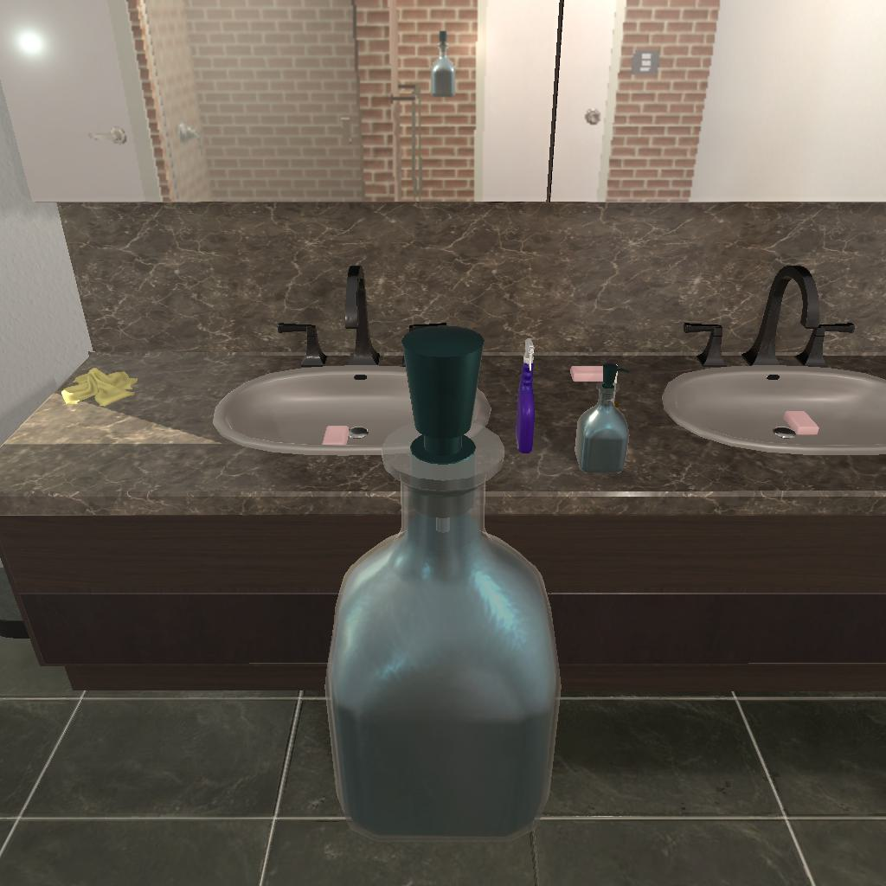

---------------------------------------------------------task: 27---------------------------------------------------------
--------------------------------------------------------------------------------------------------------------------------------------------------------------------
--------------------------------------------------------------------------------------------------------------------------------------------------------------------
Step:--------------------------------------------------------------------------12-------------------------------------------------------------------------------
----------------------------------------
VLM Prompt:
Image1:
Image2:
**Instruction**
1. Analyze the provided images to identify all visible household objects and compare the difference between images (e.h. whether the object is opened or not and taken on hand or not), focusing on those relevant to the task description "find two soapbottle and put them in garbagecan."
2. Use the analysis of images and the task hint "The agent must find an object of the desired type, pick it up, find the correct location to place it, put it down there, then look for another object of the desired type, pick it up, return to previous location, and put it down there with the other object." to answer the question: what is the most reasonable action in the choices for the task description "find two soapbottle and put them in garbagecan"?
3. Decide and write the answer using the template: The answer is: (i): , where i is the real number. If there is no desired object in images, search every place based on **Initial Observation** to find the object. And if no one is exactly correct, choose a similar answer.
**Initial Observation**
You are in the middle of a room. Looking quickly around you, you can see countertop (1), sinkbasin (1-2), sink (1-2), garbagecan (1), drawer (1-2), toilet (1), handtowelholder (1)
**Answer Choices**
(1): go to countertop 1
(2): go to sinkbasin 1
(3): go to sink 1
(4): go to garbagecan 1
(5): go to drawer 2
(6): go to sink 2
(7): go to sinkbasin 2
(8): go to toilet 1
(9): go to handtowelholder 1
(10): open drawer 1
(11): close drawer 1
(12): put soapbottle 2 in/on drawer 1
(13): examine soapbottle 2
(14): examine drawer 1
**Answer**
Let's think step by step by following the instructions.
----------------------------------------
----------------------------------------
Original Response:
Firstly, we need to identify the soap bottles in the images. In Image 1, there is no visible soap bottle. In Image 2, we can see two different soap bottles on the countertop near sinkbasin 2.
Comparing the differences between images, we notice that the soap bottles are not opened and not in hand; they are simply placed on the countertop.
Based on the task description, "find two soapbottle and put them in garbagecan," and the task hint, the agent must first find the soap bottles, pick them up, and then put them in the garbagecan.
Given the initial observation, we know there is a garbagecan in location 1.
Based on this analysis, the most reasonable action to take first would be to go to the countertop where the soap bottles are located, which is near sinkbasin 2.
The answer is: (7): go to sinkbasin 2. After reaching there, the agent should pick up the soap bottles and then go to garbagecan 1 to complete the task.
----------------------------------------
----------------------------------------
>>> Refine Original VLM Response and Get Pure Action: go to sinkbasin 2
----------------------------------------
-----------------------------------------------------------------
Running time: 14.08685564994812 seconds
Total Money: 14.142570000000001
-----------------------------------------------------------------
-----------------------------------------------------------------
Text Observation:You arrive at loc 7. On the sinkbasin 2, you see a faucet 2, a spraybottle 1, a faucet 1, a soapbar 2, a candle 1, a soapbottle 3, and a soapbar 3.
-----------------------------------------------------------------
UNSUCCEED